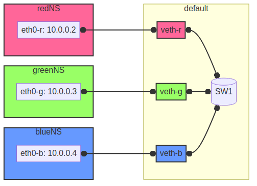

Virtuelles Netzwerk mit Open vSwitch


Virtuelles Netzwerk mit Open vSwitch
In diesem Projekt möchte ich zeigen, wie ein virtuelles Netzwerk unter Verwendung von Openvswitch und Netzwerknamenräumen unter Linux entworfen und implementiert werden kann. Durch die Nutzung virtueller Ethernet-Tunnel und eines zentralen virtuellen Switches erstellen wir eine flexible und skalierbare Netzwerkumgebung. Mein Hauptziel ist dabei - neben einem besseren Verständnis der Linux-Namenspaces - eine isolierte Netzwerkumgebung zu haben. Als Lehrer möchte ich manchmal meinen Schülern zeigen, wie ein einzelnes Netzwerkprotokoll funktioniert oder was passiert, wenn ich eine Domain pinge. Doch selbst in einer virtuellen Maschine laufen oft viele andere Netzwerkverbindungen im Hintergrund, sodass es schwierig ist, herauszufiltern, woran ich interessiert bin. In der Konfiguration, die ich hier erstelle, ist das einzige Rauschen im virtuellen Netzwerk das IPv6-Router-Solicitation.
Der Plan
Das folgende Diagramm veranschaulicht die virtuelle Netzwerkkonfiguration, die ich erreichen möchte: Der virtuelle Switch dient als zentraler Punkt und verbindet drei verschiedene Netzwerknamenräume, die durch rot, grün und blau dargestellt sind. Jeder Namespace erhält eine IP-Adresse (eth0-r, eth0-g, eth0-b) innerhalb des Subnetzes 10.0.0.0/24 und ist über virtuelle Ethernet-Schnittstellen (veth-r, veth-g, veth-b) mit dem vSwitch verbunden.

Figure 1: Netzwerkschema
Funktionen für jeden Namespace erstellen
Zunächst definieren wir zwei Variablen, um die beabsichtigten Namespaces und ihre zugehörigen Farben einzurichten. Die erste Variable ist eine einfache Indexliste mit den Namen red, green und blue. Die zweite Variable wird mit dem Bash-Befehl declare mit der Option -x für Export und -A für assoziative Liste erstellt. Hier verknüpfen wir Escape-Codes für die Farbausgabe im Terminal mit den farbigen Namespace-Namen. Diese Definition legen wir in der Datei files/ovs_setup.sh ab.
Umgebungsvariablen und Farbliste definieren
Der folgende Bash-Skript definiert Umgebungsvariablen und eine Farbliste, die für das Einrichten des virtuellen Netzwerks erforderlich sind.
export namespaces=(red green blue) declare -xA colorlist=(red '\e[31m' green '\e[32m' orange '\e[33m' blue '\e[34m' magenta '\e[35m' cyan '\e[36m')
Wir verwenden die source-Funktion, um diese Datei im zweiten Skript files/ovs.sh einzubinden, zu dem wir all den folgenden Code hinzufügen. So können wir dieses Setup leicht reproduzieren und sogar in Zukunft anpassen. Innerhalb dieses Skripts erstellen wir zunächst eine Funktion namens netns(). Sie nimmt einen Namespace-Namen und die auszuführenden Befehle im Namespace als Eingabe entgegen und führt den Befehl im zugewiesenen Namespace aus, wobei die Ausgabe in der Farbe des Namespaces kodiert wird. Auf diese Weise können wir später leicht erkennen, in welchem Namespace ein Befehl ausgeführt wurde.
script_dir="$(dirname ${BASH_SOURCE[0]})" . ${script_dir}/ovs_setup.sh function netns () { color=$1 shift args=$@ if [[ ${args[0]} = "bash" ]] then echo "Zu riskant für meinen Geschmack" else if [[ $(ip netns list | grep -o ${color}) == ${color} ]] then echo -ne ${colorlist[$color]} sudo ip netns exec ${color} ${args[@]} echo -ne '\e[0m' else echo "Namespace ${color} existiert nicht" fi fi }
Für noch mehr Bequemlichkeit erstellen wir Aliasse für jeden Namespace, sodass ein einfaches red, green oder blue gefolgt von dem Befehl die netns-Funktion für jeden dieser Namespaces aufruft.
for ns in ${namespaces[@]} do alias ${ns}="netns ${ns}" && alias ${ns} && export ${ns} done
Namespaces erstellen
Der nächste Schritt besteht darin, die drei Netzwerk-Namespaces mit den Namen red, green und blue mithilfe des Befehls ip netns add zu initialisieren. Ich verwende eine for-Schleife, um über die Namespace-Namen zu iterieren. So ist es einfacher, später falls erforderlich neue Namespaces hinzuzufügen. Wo nötig, verweise ich mit der Variablen ${ns} darauf.
for ns in ${namespaces[@]} do if [[ ! $(ip netns list | grep -o ${ns}) == ${ns} ]] then sudo ip netns add ${ns} echo "${ns} Namespace hinzugefügt." fi done ip netns list sleep 1
Anschließend wird das Loopback-Gerät in jedem Namespace mithilfe des Befehls ip l dev lo up aktiviert, um eine lokale Kommunikation innerhalb des Namespaces zu ermöglichen.
for ns in ${namespaces[@]} do netns ${ns} ip link set lo up echo "Loopback in ${ns} is up." done
Schließlich können wir den aktuellen Zustand der Netzwerkschnittstellen in jedem Namespace mithilfe des Befehls ip l überprüfen.
for ns in ${namespaces[@]} do netns ${ns} ip link done
Tunnel erstellen
Jetzt erstellen wir virtuelle Ethernet-Tunnel (veth) mit den Namen veth-r, veth-g und veth-b, die jeweils mit einer Schnittstelle in ihrem entsprechenden Netzwerk-Namespace (eth0-r, eth0-g, eth0-b) für die Kommunikation verbunden sind. Diese Tunnel erleichtern die Kommunikation zwischen dem vSwitch und den Netzwerk-Namespaces. Beachte, dass ich in den Gerätenamen nur den ersten Buchstaben verwende, um die Namespaces zu unterscheiden. Hierfür verwende ich den Mechanismus der Variablenersetzung von Bash mit ${ns::1}, um nur den ersten Buchstaben jeder Zeichenkette zu erhalten. Beachte, dass dies eine Bash-Funktion ist, wenn Du eine andere Shell verwendest.
for ns in ${namespaces[@]} do sudo ip link add veth-${ns::1} type veth peer eth0-${ns::1} echo "Verknüpfe veth-${ns} mit eth0-${ns}." done
Link in Namespaces platzieren
Nachdem die Tunnel erstellt wurden, ist der nächste Schritt, die Schnittstellen ihren jeweiligen Namespaces zuzuweisen. Dies wird erreicht, indem jedem Endpunkt eines Tunnels (eth0-r, eth0-g, eth0-b) sein entsprechender Namespace (rot, grün, blau) zugeordnet wird.
for ns in ${namespaces[@]} do sudo ip link set eth0-${ns::1} netns ${ns} done
IPv4-Adressen hinzufügen
Schließlich werden IPv4-Adressen den Schnittstellen in jedem Namespace zugewiesen, um die Netzwerkkommunikation zu ermöglichen. Die IP-Adressen 10.0.0.2, 10.0.0.3 und 10.0.0.4 mit einer Subnetzmaske /24 werden jeweils den Schnittstellen eth0-r, eth0-g und eth0-b zugewiesen. Zusätzlich werden die Schnittstellen aktiviert, um die Netzwerkkonfiguration zu aktivieren.
ip=1 for ns in ${namespaces[@]} do ip=$((ip+1)) netns ${ns} ip address add 10.0.0.${ip}/24 dev eth0-${ns::1} netns ${ns} ip link set dev eth0-${ns:0:1} up echo "Add IP 10.0.0.${ip} to eth0-${ns::1}." done
Virtuellen Switch öffnen
Um den virtuellen Switch einzurichten, wird zunächst das Openvswitch-Paket mithilfe des entsprechenden Paketmanagers installiert. Anschließend wird der Dienst ovs-vswitchd gestartet, um den Switch zu verwalten.
Installieren
if [ -f /etc/os-release ]; then . /etc/os-release else echo "Die Linux-Distribution kann nicht bestimmt werden." exit 1 fi case $ID_LIKE in debian|ubuntu) sudo apt install -y openvswitch-switch ;; fedora|rhel|centos) sudo yum install -y openvswitch ;; suse) sudo zypper install -y openvswitch ;; arch) sudo pacman -Syu openvswitch ;; *) echo "Nicht unterstützte Distribution." exit 1 ;; esac if [[ $ID == arch ]]; then sudo pacman -Syu openvswitch else echo "Nicht unterstützte Distribution." exit 1 fi
sudo systemctl start ovs-vswitchd.service echo "ovs-vswitchd gestartet"
Switch hinzufügen
Nach der Installation erstelle ich einen virtuellen Switch mit dem Namen SW1 mithilfe des Befehls ovs-vsctl add-br.
sudo ovs-vsctl add-br SW1
Die Switch-Konfiguration wird mithilfe von ovs-vsctl show angezeigt.
sudo ovs-vsctl show
Ports hinzufügen
Als Nächstes fügen wir Ports zum virtuellen Switch hinzu, um ihn mit den Netzwerk-Namespaces zu verbinden. Jeder Port ist mit einer entsprechenden Tunnel-Schnittstelle (veth-r, veth-g, veth-b) verbunden.
for ns in {r,g,b} do sudo ovs-vsctl add-port SW1 veth-${ns} echo "veth-${ns} zu SW1 hinzugefügt." done
Erneut können wir bestätigen, dass alles wie beabsichtigt funktioniert hat:
sudo ovs-vsctl show
Diese Ports müssen nun aktiviert werden.
for ns in {r,g,b} do sudo ip link set veth-${ns} up echo "Link veth-{ns} ist aktiviert." done
Ich überprüfe immer gerne noch einmal. Daher 'grepe' ich nach der veth-Schnittstelle und verwende die -A-Option, um immer die ersten 3 Zeilen jeder Schnittstellenkonfiguration anzuzeigen.
sudo ip a | grep veth -A3
Aufräumen
Ein Neustart wird in der Regel den Großteil des Chaos hinter uns aufräumen, aber ich möchte ein gutes Kind sein und selbst aufräumen. Daher habe ich ein weiteres Skript erstellt, das genau das tut.
script_dir="$(dirname ${BASH_SOURCE[0]})" #Source Setup . ${script_dir}/ovs_setup.sh # Create a list of target interfaces for ns in ${namespaces[@]} do target_interfaces=(${target_interfaces[@]} veth-${ns::1}) done # Überprüfen Sie auf vorhandene Namespaces if [[ -n $(ip netns list) ]]; then echo "Netzwerk-Namespaces werden entfernt..." # Durchlaufen Sie jeden Namespace und entfernen Sie nur passende for ns in $(ip netns list | awk '{print $1}'); do if [[ "${namespaces[@]}" =~ "$ns" ]]; then sudo ip netns del $ns echo "Namespace entfernt: $ns" fi done else echo "Keine Netzwerk-Namespaces gefunden." fi # Überprüfen Sie auf vorhandene veth-Schnittstellen if [[ $(ip link show | grep veth -c) -gt 0 ]]; then echo "Veth-Schnittstellen werden entfernt..." # Durchlaufen Sie jede veth-Schnittstelle und entfernen Sie nur passende for veth in $(ip link show | grep veth | awk '{print $2}' |sed 's/@.*$//g'); do if [[ "${target_interfaces[@]}" =~ "$veth" ]]; then sudo ip link del $veth echo "Schnittstelle entfernt: $veth" fi done else echo "Keine veth-Schnittstellen gefunden." fi echo "Open vSwitch wird gestoppt und deaktiviert..." sudo systemctl stop ovs-vswitchd.service # Überprüfen, ob das benannte Ausführungsverzeichnis für den blauen Namespace vorhanden ist if [[ -d $(ls -d blue_named_run_?????) ]]; then rm -rf blue_named_run_????? echo "Ausführungsverzeichnis für den benannten Dienst im blauen Namespace entfernt". fi for ns in ${namespaces[@]} do if [[ $(alias ${ns}) ]] ; then unalias ${ns} "${ns} entaliasiert." fi done echo "Unseting netns function and variables" unset -f netns unset namespaces unset colorlist echo "Aufräumen abgeschlossen!"
Fazit
Es ist überraschend einfach, dieses grundlegende Setup zu erstellen.
Wir können jetzt die verschiedenen Namespaces erkunden, indem wir netzwerkbezogene Befehle mit den red(), blue() und green() Funktionen aufrufen, z. B.:
sudo blue ip route sudo red ping 10.0.0.3 -c 5 sudo green nstat -s | grep -i icmp
Dies ist ein großartiger Spielplatz, um grundlegende Netzwerkfunktionalitäten zu erkunden.
Anerkennung
Ich habe über Netzwerk-Namespaces in zwei fantastischen Videos gelernt: